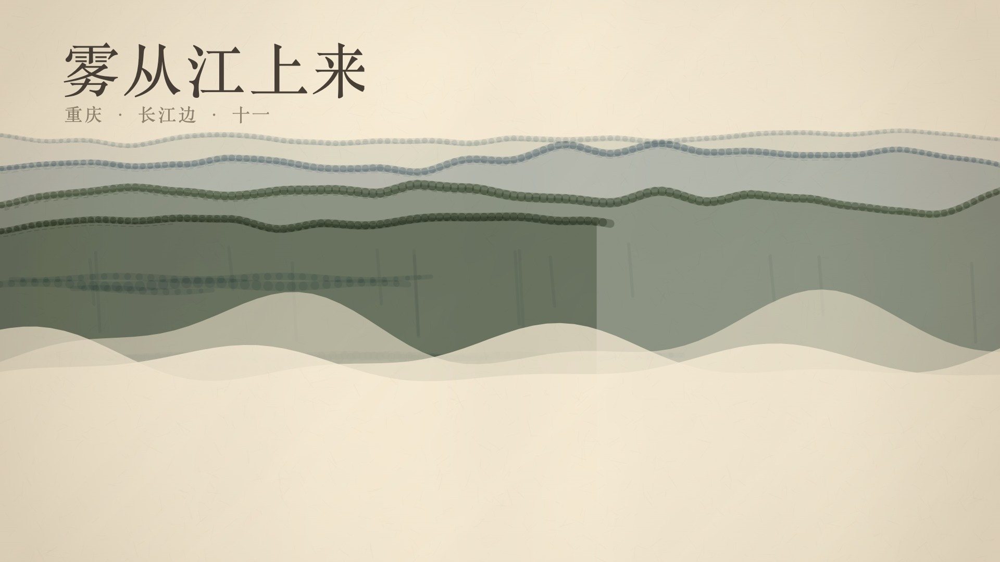
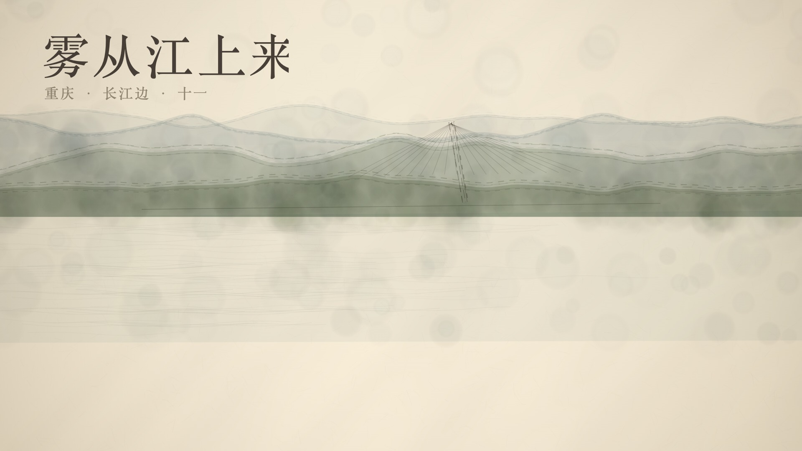

成片：重庆江边的雾 · 全部由 Canvas 笔刷逐笔画出，没有一张预先合成的图
前面几条片子走的都是矢量动效：卡片、进度条、逐字弹出。这套东西好复刻，也好看，但它有个问题——换个人照着截图就能做出来，画面里没有手的痕迹。做内容的人最后都要面对一件事：观众记得住的不是排版，是质感。
所以我换了目标：不做动效，做一张会动的画。水彩是最难糊弄的一种，笔画是湿的、边缘会渗、颜色是叠出来的，任何「用渐变模拟」的做法一眼就假。
第一版我自己写笔刷：沿路径逐段 lineWidth + lineCap='round' 描边。渲染出来是这样——

第一版：山脊像一串珠子，山体是横向硬边色带，山脚一直铺到画布底，把江面直接盖死
三个毛病，每一个都是原理级的：
第二版改了两件事：笔触改成多边形 ribbon 填充（沿路径算出左右偏移，一次 fill 出来，不再是逐段描边），颜色用径向渐变 dab 做湿边。串珠没了，但出现了新问题——

第二版：天空里有明显的圆形气泡，山体像一块半透明板岩，桥的拉索细得像蜘蛛腿，下半幅发空
气泡的来源很具体：radial gradient 的色标从 0 到 0.62 都是实色，于是每一笔都留下一个可辨认的圆盘。参数错了，不是思路错了。但这版让我意识到一个更严重的事实：我在重造一个水彩引擎，每修一个缺陷都要花一轮渲染去验证，而无底洞是没有底的。
我用的素材库里有一套水彩风格，它自带一个 142 行的笔刷引擎。核心就三样东西：
// 每一笔是一组点，每个点带宽度 w、法线 nx/ny、以及一道随机飞白 br pts = [{ x, y, w, nx, ny, br }, ...] // 沿路径铺一条可变宽度的色带，一次 fill drawS(ctx, path, color, amount) // 按顺序把一组笔触逐笔「画上去」，这就是 painting-in drawList(ctx, list, progress)
它比我自己那版多了两件我根本没想到的事：飞白（每笔随机留 6 道不上色的缺口，像干笔扫过纸面）和可变法线（笔触宽度沿路径变化）。水彩之所以像水彩，靠的就是这两样，不是颜色。
于是第三版全部改成「先建笔触列表，再逐笔画出」。结构上变成了纯数据：
// 山脊线：噪波给起伏，脊线往下落宽笔触当山体 for (x = -140; x <= W + 140; x += 34) { y = yBase - (fbm(x * 0.0022 + seed) * amp + ...); list.push(mk([[x, y + 4], [x + rnd(-10, 10), y + rnd(40, 78)]], rnd(44, 86), col, { prof: 'even', a: 0.07 }); // 山体 list.push(mk([[x, y], [x2, y2]], rnd(4, 8), ink, { prof: 'brush' }); // 脊线 }
每一层山是一个独立的笔触列表，画的时候传一个 0→1 的进度，自动就是「一层层画上去」的节奏。代码里没有一行动画逻辑，动画是「画到第几笔」这件事本身。
一开始我只画纹理笔触，结果是一片「绒毛」，没有山的形。做法改成两步：先铺一层带轮廓的湿涂，用垂直渐变从山色过渡到透明（底边自然消失，不留硬缝），再把纹理笔触画在上面。轮廓给形，纹理给质。
「画上去」如果用矩形裁剪控制进度，前沿就会留下一条竖线——这是裁剪，不是笔。解法是把湿涂画到离屏画布，再用一个 190px 的渐变做 destination-in 蒙版，前沿变成从 1 到 0 的软化过渡。这条软边，才是笔走过去的样子。
山体底边渐隐、江面又从更低处开始，中间留了一条空的纸色带。补的是湿边：水线下面压 7 条极淡的灰蓝横笔，笔画越靠下越浓。水彩里这一条叫 wet edge，是纸湿的时候颜料积在边界上的结果，缺了它，两层永远像贴上去的。
标题用逐字扫入（clip 的宽度随时间增长），再配山水的逐层画入，前 1.5 秒几乎是空白。不是错，是节奏不对：观众在第一秒没看到任何东西，就会以为视频卡住了。改法是标题改成淡入 + 轻微上浮 16px，同时把江面的大 wash 提到 0.9 秒就开始铺——先湿纸，再画山。有东西在动，人就不会走。
我自己看片能指出两处：
| 指标 | 数值 |
|---|---|
| 成片规格 | 1920×1080 / 25fps / 15 秒 / 376 帧 |
| 单帧渲染 | 约 0.15–0.25 秒（headless Chrome 截图，含纸纹生成） |
| 全片渲染 | 约 70 秒（376 帧） |
| 编码 | ffmpeg / libx264 / crf 19 / 3.3MB |
| 素材 | 零。没有图片、没有视频、没有音频 |
| 代码 | 单文件 index.html，约 320 行 |
这套流程最实用的地方是改一个参数只花一次渲染。想看某一帧长什么样，给个时间点就出图，150 毫秒；想看成片，70 秒。对比剪映里拖时间线，这个反馈环快到可以拿来做设计——我一共废掉两版、重写三次，靠的就是这个速度。
至于值不值得投入——我的判断是：这条路能做出「不像 AI 做的」东西，但它对审美要求极高，参数差一点就是廉价手绘风。它适合做片头、封面、氛围段，不适合承载信息。
本文记录于 2026-11-26 · 工程在本地 watercolor-film 项目，笔刷引擎来自 lemo-opuscar 的 watercolor 风格，渲染用 headless Chrome 截帧 + ffmpeg 编码